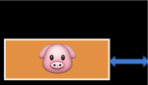
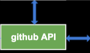
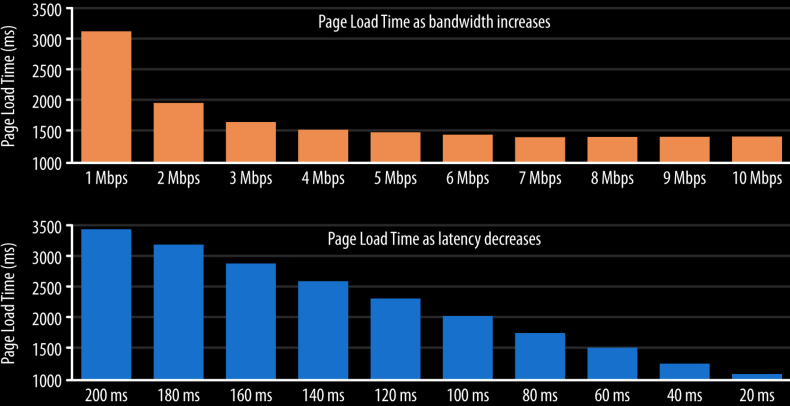

Гоголев Сергей
REST – архитектурный стиль, позволяющий сделать сетевое взаимодействие удобнее, прозрачнее и стандартизованнее

repo.createIssue(title, description)
⇡ ⇡
method arguments
Но удалённо!
RPC (Remote Procedure Call)
// request
{
"jsonrpc": "2.0",
"id": 1,
"method": "createIssue",
"params": [title, description]
}
// response
{
"jsonrpc": "2.0",
"id": 1,
"result": "Ok"
}
RPC (Remote Procedure Call)
Клиент зависит от конкретных методов
И от порядка и количества аргументов
Фиксирует формат ответа
REST (REpresentational State Transfer)
POST /issue HTTP/1.1 Host: github.com { "title": "Add js linter", "description": "Eslint or jscs" }
HTTP/1.1 201 Created Location: /issue/42
REST vs RPC
RPC опирается на методы (действия),
REST – на ресурсы (объекты, сущности)
RPC использует HTTP только как транспорт, REST – базируется на HTTP и расширяет его
Latency – время необходимое пакету добраться от источника в пункт назначения (milliseconds)
Bandwidth – максимально возможный объём данных, передаваемых за единицу времени (bits per second)
Latency vs Bandwidth
Установка нового соединения
– дорогая операция
В начале нового соединения скорость передачи информации далека от максмальной
Уменьшить объём передаваемых данных
Уменьшить количество TCP соединений
POST /notes HTTP/1.1 Accept: application/json Accept-Encoding: gzip, deflate Host: localhost:5000 User-Agent: HTTPie/0.9.3 { "title": "Add js linter", "description": "Eslint or jscs" } |
Start line Message headers Empty line Message body |
HTTP/1.1 200 OK Content-Length: 67 Content-Type: application/json; charset=utf-8 Date: Wed, 16 Mar 2016 14:32:18 GMT X-Powered-By: Express { "createdAt": 1458138738899, "name": "music", "text": "Music to listen" } |
Start line Message headers Empty line Message body |
Ресурсы
/notes - заметки /notes/film - заметка о фильмах
/notes/film/fav - закладка на заметке
/notes/film/public - публичность заметки
URL (Uniform Resource Locator)
http://localhost:50000/notes?limit=10 ⇡ ⇡ ⇡ ⇡ ⇡ scheme host port path query
POST /notes?limit=10 HTTP/1.1 Host: localhost:5000
GET – получение ресурса HEAD – получение только заголовков POST – создание ресурса PUT – обновление ресурса PATCH – обновление фрагмента ресурса DELETE – удаление ресурса
1xx – информационные 2xx – успех транзакции 3xx – перенаправления 4xx – ошибки клиента 5xx – ошибки сервера
200 Ok 201 Created 204 No content 301 Moved Permanently 302 Moved Temporarily 400 Bad request 401 Unauthorized 403 Forbidden 404 Not found 409 Conflict 500 Internal Server Error 504 Gateway Timeout
Accept: application/json Accept-Encoding: gzip, deflate Accept-Language: ru, en;q=0.7 User-Agent: HTTPie/0.9.3
Content-Language: ru Content-Length: 67 Content-Type: application/json; charset=utf-8 X-Powered-By: Express
httpie (CLI)
Postman (Chromium)
Каждый следующий HTTP запрос не может опираться на отправленные данные предыдущего запроса
HTTP не хранит промежуточное состояние клиента, всё состояние целиком описывается в каждом запросе
// Request Accept-Encoding: gzip, deflate
// Response Content-Encoding: gzip
Использование одного TCP-соединения для многократных HTTP-запросов
// Request (HTTP 1.0) Connection: keep-alive
// Response (HTTP 1.0) Connection: keep-alive
// Request (HTTP 1.1)
// Request (HTTP 1.1) Connection: close
HTTP/1.1 200 OK
Cache-Control: public, max-age=31536000, no-cache
private – кеширование только у конечного клиента,
public – и на промежуточных серверах (CDN)
max-age – время жизни кеша в секундах
no-cache – каждый раз проверяем не изменился ли,
no-store – каждый раз запрашиваем
HTTP/1.1 200 OK
Cache-Control: public, max-age=31536000, no-cache
Last-modified: Wed, 15 Nov 1995 04:58:08 GMT
GET /index.css HTTP/1.1
If-Modified-Since: Wed, 15 Nov 1995 04:58:08 GMT
Last-modified === If-Modified-Since
HTTP/1.1 304 Not Modified
HTTP/1.1 200 OK
Cache-Control: public, max-age=31536000, no-cache
ETag: d1d3c5c4cdb2568785ba1a366b7fb048
GET /index.css HTTP/1.1
Host: urfu2015-notes.surge.sh
If-None-Match: d1d3c5c4cdb2568785ba1a366b7fb048
ETag === If-None-Match
HTTP/1.1 304 Not Modified
Архитектурный стиль, позволяющий сделать сетевое взаимодействие удобнее, прозрачнее и стандартизованнее
Рой Филдинг
Architectural Styles and the Design of Network-based Software Architectures
REST (REpresentational State Transfer)
PUT /notes/films HTTP/1.1 Accept: application/json Accept-Encoding: gzip, deflate Host: localhost:5000 { "title": "Films", "description": "Films to watch" }
Use path, not query
/api?type=notes&id=films
/notes/films
Use plurals, not singles
/note/films
/notes/films
Use only nouns, not verbs
POST /notes/add
POST /notes
Avoid verbiage, use plurals
/note_list
/notes
Use lowercase
/pullRequests
/pull-requests
/pulls
Use nesting
/comments?note_id=films
/notes/films/comments
Получает состояние ресурса в одном из представлений (JSON, XML, HTML)
GET /notes
GET /notes/films
GET /notes/films/fav
GET /notes?limit=10
200 Ok
404 Not found
400 Bad request /notes?limit=muahahaha
Не модифицирует ресурс!
Создаёт новый ресурс с начальным состоянием, когда мы не знаем его ID
POST /notes
201 Created
409 Conflict
Создаёт новый ресурс с начальным состоянием, когда мы знаем его ID
PUT /notes/films
PUT /notes/films/fav
200 Ok
204 No content
Обновляет состояние существующего ресурса целиком
PUT /notes/films
PUT /notes/films/fav
200 Ok
204 No content
404 Not found
Удаляет существующий ресурс
DELETE /notes/films
DELETE /notes/films/fav
200 Ok
204 No content
404 Not found
Обновляет состояние существующего ресурса частично
PATCH /notes/films
200 Ok
204 No content
404 Not found
401 Unauthorized 403 Forbidden 405 Method not allowed 500 Internal Server Error
POST /notes/films PUT /notes/films
POST /notes HTTP/1.1 Accept: application/json Accept-Encoding: gzip, deflate Host: localhost:5000 { "title": "Films", "description": "Films to watch" }
HTTP/1.1 201 Created Location: /notes/films
GET / HTTP/1.1 Host: api.github.com
HTTP/1.1 200 Ok { current_user_url: "https://api.github.com/user", gists_url: "https://api.github.com/gists{/gist_id}" }
GET /notes HTTP/1.1
HTTP/1.1 200 Ok Accept: application/hal+json { "_links": { "self": { "href": "/notes" }, "next": { "href": "/notes?page=2" }, "find": { "href": "/notes/{?id}", "templated": true } } }
HTTP/1.1 200 Ok Accept: application/hal+json { "_embedded": { "notes": [{ "_links": { "self": { "href": "/notes/films" } }, "title": "Films", "description": "Films to watch" }, { "_links": { "self": { "href": "/notes/books" } }, "title": "Books", "description": "Books to read" }] } }
Один и тот же запрос приводит к одному и тому же результату (состоянию)
GET – да POST – нет PUT – да DELETE – да PATCH – нет
Новая версия каждый раз, когда ломаем обратную совместимость
https://developer.github.com/v3/
var xhr = new XMLHttpRequest();
xhr.open('GET', '/notes');
xhr.send();
xhr.open('GET', '/notes', false);
xhr.open('GET', '/notes', false, user, password);
xhr.abort();
xhr.onreadystatechange = function() {
if (xhr.readyState !== 4) {
return;
}
if (xhr.status !== 200) {
console.log(xhr.status + ': ' + xhr.statusText);
} else {
console.log(xhr.responseText);
}
}
UNSENT 0 начальное состояние
OPENED 1 вызван open
HEADERS_RECEIVED 2 получены заголовки
LOADING 3 загружается тело
DONE 4 запрос завершён
0 → 1 → 2 → 3 → … → 3 → 4
xhr.setRequestHeader('Content-Type', 'application/json');
xhr.getResponseHeader('Content-Type');
xhr.getAllResponseHeaders();
// Cache-Control: max-age=31536000
// Content-Type: text/html
xhr.timeout = 30000; // 30s
xhr.ontimeout = function () {
console.log('Try again later');
}
<form name="notes">
<input name="title" value="">
<input name="description" value="">
</form>
var formData = new FormData(document.forms.notes);
formData.append("createdAt", new Date());
var xhr = new XMLHttpRequest();
xhr.open("POST", "/notes");
xhr.send(formData); // multipart/form-data.
<form name="notes">
<input name="title" value="">
<input name="description" value="">
<input type="image" value="">
</form>
var image = document.querySelector('input[type="image"]')
formData.append("picture", image.files[0]);
var xhr = new XMLHttpRequest();
xhr.open("POST", "/notes");
xhr.send(formData); // multipart/form-data.
xhr.onprogress = function(event) { // Every 50 ms
console.log(event.loaded); // Bytes
console.log(event.total); // Content-Length || 0
}
xhr.upload.onprogress = function(event) {}
xhr.upload.onload = function() {}
xhr.upload.onerror = function() {}
Cross Origin Resurce Sharing
Origin = scheme + host + port
Простые методы
GET, POST, HEAD, DELETE
Простые заголовки
Accept
Accept-Language
Content-Language
Content-Type
Cookie
GET /notes HTTP/1.1 Host: awesomenotes.com Origin: http://notesdashboard.ru
HTTP/1.1 200 Ok Content-Type: text/html Access-Control-Allow-Origin: http://notesdashboard.ru
HTTP/1.1 200 Ok Content-Type: text/html Access-Control-Allow-Origin: *
PUT /notes/films HTTP/1.1 Host: awesomenotes.com Origin: http://notesdashboard.ru
OPTIONS /notes/films HTTP/1.1 Host: awesomenotes.com Access-Control-Request-Method: PUT Access-Control-Request-Headers: accept-encoding
preflight
HTTP/1.1 204 No content Access-Control-Allow-Methods: PUT Access-Control-Allow-Headers: accept-language, origin, accept-encoding Access-Control-Max-Age: 60000
let promise = fetch(url[, options]);
{
methtod: 'POST',
headers: {
'Accept': 'application/json'
},
body: new FormData(), // 'foo=bar&lorem=ipsum'
mode: 'same-origin', // cors
cache: 'no-cache', // default, no-store, reload, force-cache
}
fetch('/notes')
.then(function(response) {
console.log(response.headers.get('Content-Type'));
// text/html
console.log(response.status);
// 200
return response.text();
})
.catch(console.error);
response.arrayBuffer()
response.blob()
response.formData()
response.json()
response.text()
response.url
response.statusText
response.type // basic, cors
Меньше размер пакета
Разделение заголовка и данных на фреймы
Одно TCP-соединение
Bi-directional
Параллельные запросы без блокировки
Параллельные ответы без блокировки
Конкатенация, спрайты и шардинг доменов уходят в прошлое
Chromium – weight based
HTML 256
CSS 220
scripts 183
images 110
Firefox – dependencies based
Меньше размер пакета
Устраняет дублирование данных в потоке
Нивелируем влияние TCP slow-start
2015-09-22 nginx-1.9.5
High Performance Browser Networking
What Web Developer Should Know About HTTP